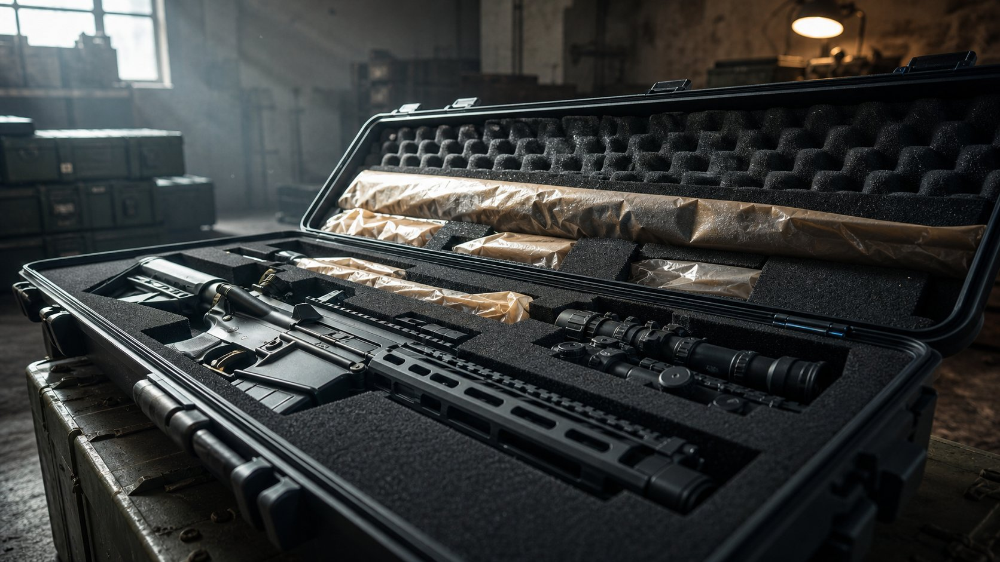
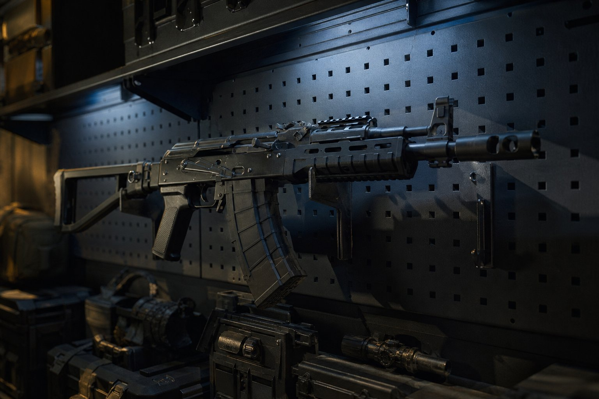

1. A545 — Le roi du meta S7
L'A545 est la première arme apex ajoutée depuis le lancement du jeu. MoreFun la positionne explicitement comme pair du U191 et du H416. Son A-stage recoil system (façon AEK-971 double-chambre simplifié) offre un sweet spot à 20–40 m que peu d'armes égalent. En S7, c'est l'arme des joueurs qui veulent gagner sans compromis : portée utile, TTK, recul gérable.
Build meta recommandé
| Pièce | Choix | Pourquoi |
|---|---|---|
| Munitions | PPBS / 7N39 (T5-T6) | Seule mun qui transperce le T6 en S7 sans RNG |
| Bouche | Compensateur vertical | Recul vertical maîtrisé, ergo préservée |
| Garde-main | Rail + poignée angled | Recul horizontal divisé par deux |
| Optique | 1–4x ou 4x | Flexibilité 10–60 m |
| Chargeur | 45 coups | Les mutants S7 mangent les munitions |
2. AK-15SC — La terreur du close-to-mid
L'AK-15SC est la réponse MoreFun aux nostalgiques de la AKM : dégâts 7.62 en format court, recul brutal si mal moddé, mais avec les bons compensateurs et une poignée angled, il tient tête à des builds deux fois plus chers. Le choix #1 des rat kits ambitieux.

Les quatre attachements et ce qu'ils valent
Les quatre attachements saisonniers de la Saison 7 ne sont pas interchangeables, et les equipper tous n'est pas une stratégie : chaque emplacement d'arme accepte un seul attachement.
| Emplacement | Ce que l'attachement saisonnier apporte | Quand il prime |
|---|---|---|
| Canon | Le canon de chair du MPX, qui transforme l'arme en broyeur de horde | En mode zombies, où le volume remplace la précision |
| Moulinette | La réduction de dispersion, la seule qui touche la précision | Dès qu'un engagement dépasse la distance de contact |
| Poignée | La stabilité du tir, qui corrige le tir long | Avec une arme à cadence élevée, dont le recul cumule vite |
| Grosse Manufacture | Le chargeur, qui détermine le nombre de rafales avant rechargement | En mode horde, où le rechargement coûte une mort |
La conséquence pratique est nette : le canon de chair du MPX est l'attachement à prendre en premier si vous jouez en mode zombies, et l'attachement à ne pas prendre du tout si vous ne jouez qu'en joueur contre joueur. Un canon de chair sur un fusil de précision n'améliore rien : il occupe un emplacement et un budget pour rien.
3. Les 4 attachements saisonniers
Premier set d'attachements exclusifs de saison de l'histoire d'ABI. Disponibilité limitée : achetez-les avant la fin de la saison, les prix explosent ensuite.
| Attachement | Plateforme | Effet S7 | Verdict |
|---|---|---|---|
| PCC-9 Fully-Automatic Kit | PCC9 | Transforme le PCC9 en full-auto ; améliore le close-range quelle que soit la mun | D-tier → A-tier du jour au lendemain |
| M110 Binary Trigger | M110 | Deux balles par pression de gâchette — la forgiveness en peek | Meilleur trigger de la saison |
| FAL Burst Kit | FAL | Stabilise le FAL ; build stable haute puissance low-RPM | Le FAL revient au meta |
| MPX Vulcan Barrel | MPX | Dégâts chair/jambes absurdes — melt les armures lourdes | Le cauchemar des T6 |
Détails complets, ordre d'achat et synergies : Attachements S7 — guide complet.
Les deux armes côte à côte
Comparer l'A545 et l'AK-15SC ne se fait pas sur le chiffre de cadence. La cadence est le résultat ; le vrai comparatif est sur trois axes qui déterminent le style de jeu que l'arme permet.
| Critère | A545 | AK-15SC |
|---|---|---|
| Cadence | 900 coups par minute | 730 coups par minute |
| Terrain de jeu | Très proche, jusqu'au contact | Proche et intermédiaire, jusqu'à une trentaine de mètres |
| Ce que la cadence achète | Le temps de réaction : l'ennemi a moins d'une seconde avant d'être touché | La marge : le tir reste propre quand le premier ne l'est pas |
| Ce qu'elle coûte | Une dispersion plus forte et une munitions plus exigeante | Une cadence moindre, donc un temps de réponse plus long |
| Milieu de jeu | Zombie Endless et ferme serrée | Joueur contre joueur à distance moyenne |
| Condition d'emploi | Ne jamais tirer au-delà de la distance où la dispersion reste gérable | Privilégier le tir placé à la distance d'engagement |
La règle qui départage. Si vous savez que le combat va se passer à moins de dix mètres, l'A545 l'emporte : à cette distance, la cadence prime sur tout. Si le combat se décide à trente mètres, la précision prime sur la cadence, et l'AK-15SC est le meilleur choix. En pratique, l'A545 est le meilleur achat par défaut, parce que la plupart des engagements se joue à distance de contact — mais c'est une règle de fréquence, pas une règle de supériorité.
4. Contexte balance : pourquoi ces armes ?
- RNG de pénétration T5/T6 supprimé — les munitions haute valeur ne sont plus des dés ; A545/AK-15SC en tirent pleinement parti.
- Portée effective augmentée — la valeur des AR polyvalents grimpe, celle des SMG courte-portée baisse à longue distance.
- Headshots renforcés — récompense les armes précises (M24 bolt oneshot, Mk14/SJ16 en peek-headshots).
- Caps par mode — Normal T4 : A545 avec muns T4 reste légal partout, d'où son statut d'arme universelle.
Ne verrouillez pas votre build J1
Semaine 1–2 de S7 : les prix, les taux de recoil réels et les nerfs d'ajustement changent. Attendez deux semaines de données communautaires avant de vendre votre M4A1. Voir aussi le guide Balance Changes.